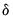
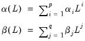

|
|
|
, while bad news has an impact of . If , bad news increases volatility, and we say that there is a leverage effect for the i-th order. If
, the news impact is asymmetric.
Note that GARCH is a special case of the TARCH model where the threshold orderis set to zero. To estimate a TARCH model, specify your GARCH model with ARCH and GARCH order and then change the Threshold order to the desired value.
follows a Generalized Error Distribution (GED), while EViews offers you a choice of normal, Student’s t-distribution, or GED. Second, Nelson's specification for the log conditional variance is a restricted version of:
To estimate an EGARCH model, simply select the EGARCH in the model specification dropdown menu and enter the orders for the ARCH, GARCH and the Asymmetry order.Taylor (1986) and Schwert (1989) introduced the standard deviation GARCH model, where the standard deviation is modeled rather than the variance. This model, along with several other models, is generalized in Ding et al. (1993) with the Power ARCH specification. In the Power ARCH model, the power parameter  of the standard deviation can be estimated rather than imposed, and the optionalparameters are added to capture asymmetry of up to order
:
. To estimate the Taylor-Schwert's model, for example, you will to set the order of the asymmetric terms to zero and will set
to 1.


variable lags.
Typically, researchers employ a full year of lags in modeling the permanent component so there may be a large number ofparameters to be estimated, e.g.,
for a single monthly variable, and for a single weekly variable.
In practice, the parameters of the beta function are often further restricted by imposing a shape restriction (), an endpoint restriction (
), or both restrictions (
and
) (see “Beta Weighting” for related discussion).
Next, create an equation object by selecting Object/New Object.../Equation or Quick/Estimate Equation… from the main menu, or enter the keyword equation in the command window. Select ARCH - Autoregressive Conditional Heteroskedasticity in the Method drop-down menu. Alternately, entering the keyword arch in the command window will create a new equation object and automatically set the main estimation method.EViews will display the base ARCH dialog. Change the Model drop down menu in the middle of the page to MIDAS to display the MIDAS GARCH Specification page:There are three distinct sections in the Specification tab of the dialog.
as a free parameter. If this option is not specified, EViews will enforce symmetry by setting
.
The permanent component for MIDAS uses lags of a low frequency regressor. You should enter the name of a single permanent component regressor in the Low frequency regressor edit field. Note that EViews only allows the specification of a single low frequency regressor. The syntax for specifying this variable is pagename\seriesname where pagename is the name of the page containing the series, and seriesname is the name of the series. You should use the Lag edit field to specify the number of low frequency regressor lags to include in the permanent component.
are drawn from a Uniform(-2, 2) distribution.
The randomization procedure is governed by the specified Random generator and the random Seed fields. You may provide an integer value from 0 to 2,147,483,647, or you may the leave the Seed field blank, in which case EViews will use the clock to obtain a seed at the time of estimation.The Representations view (View/Representations) offers text representations of the estimation command string, and the mean and variance equations.To see the coefficient label view, click on View/Coefficient Labels:In some cases, you might wish to estimate an ARCH model not mentioned above, for example a special variant of PARCH. Many other ARCH models can be estimated using the logl object. For example, “The Log Likelihood (LogL) Object” contains examples of using logl objects for simple bivariate GARCH models.
 , which will differ in a manner that depends upon the distributional assumption and the order
, which will differ in a manner that depends upon the distributional assumption and the order  . For example, in a model with a normal distribution, the difference will be .
. For example, in a model with a normal distribution, the difference will be .  for all , and .
for all , and . . Note that if and
. Note that if and  for all
for all  , the PARCH model is simply a standard GARCH specification. As in the previous models, asymmetric effects are present if
, the PARCH model is simply a standard GARCH specification. As in the previous models, asymmetric effects are present if  .
. , modeled as:
, modeled as: is still the volatility, while
is still the volatility, while  takes the place of
takes the place of  and is the time varying long-run volatility. The first equation describes the transitory component, , which converges to zero with powers of (
and is the time varying long-run volatility. The first equation describes the transitory component, , which converges to zero with powers of ( ). The second equation describes the long run component
). The second equation describes the long run component  , which converges to
, which converges to  with powers of
with powers of  .
.  is typically between 0.99 and 1 so that approaches
is typically between 0.99 and 1 so that approaches  very slowly. We can combine the transitory and permanent equations and write:
very slowly. We can combine the transitory and permanent equations and write: are the exogenous variables and
are the exogenous variables and  is the dummy variable indicating negative shocks.
is the dummy variable indicating negative shocks.  indicates the presence of transitory leverage effects in the conditional variance.
indicates the presence of transitory leverage effects in the conditional variance. is the lag operator.
is the lag operator. yields
yields is the product of a transitory GARCH component
is the product of a transitory GARCH component  and a permanent component
and a permanent component  ,
, are explanatory variables,
are explanatory variables,  is a dummy variable indicating negative shocks, and
is a dummy variable indicating negative shocks, and  are
are  lags of lower frequency exogenous variables.
lags of lower frequency exogenous variables. and associated coefficient
and associated coefficient  allow you to introduce asymmetry in the transitory component; if
allow you to introduce asymmetry in the transitory component; if  the component is symmetric.
the component is symmetric. is modeled using an intercept term
is modeled using an intercept term  and
and  lags of
lags of  with weights
with weights  .
. in terms of a slope parameter
in terms of a slope parameter  , and a small number of
, and a small number of  weights:
weights:

 .
.